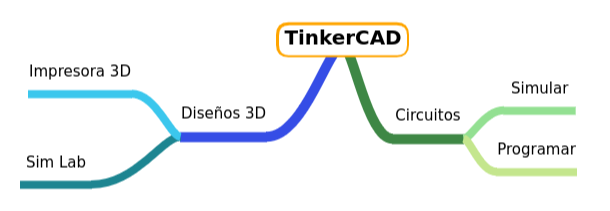

Cosas que puedes hacer con Tinkercad
{"id":"0ddc9e02-afee-4ea9-8e59-113ad1d19751","title":"TinkerCAD","mindmap":{"root":{"id":"4c036060-39c9-4711-bb4a-c040577d5ff7","parentId":null,"text":{"caption":"TinkerCAD","font":{"style":"normal","weight":"bold","decoration":"none","size":20,"color":"#000000"}},"offset":{"x":0,"y":0},"foldChildren":false,"branchColor":"#197334","children":[{"id":"0ef617a3-151c-4986-b726-ae58092ab41a","parentId":"4c036060-39c9-4711-bb4a-c040577d5ff7","text":{"caption":"Circuitos","font":{"style":"normal","weight":"normal","decoration":"none","size":15,"color":"#000000"}},"offset":{"x":49,"y":100},"foldChildren":false,"branchColor":"#3e8745","children":[{"id":"68bb82ca-9141-4989-bb01-764c170784c3","parentId":"0ef617a3-151c-4986-b726-ae58092ab41a","text":{"caption":"Simular","font":{"style":"normal","weight":"normal","decoration":"none","size":15,"color":"#000000"}},"offset":{"x":111.66668701171875,"y":-27.333328247070312},"foldChildren":false,"branchColor":"#93e092","children":[]},{"id":"d59917c3-347b-49f0-91db-3e833202bd7d","parentId":"0ef617a3-151c-4986-b726-ae58092ab41a","text":{"caption":"Programar","font":{"style":"normal","weight":"normal","decoration":"none","size":15,"color":"#000000"}},"offset":{"x":104,"y":33.99998474121094},"foldChildren":false,"branchColor":"#c4e68d","children":[]}]},{"id":"2f48f4bc-79c9-4cc4-9736-434b80316264","parentId":"4c036060-39c9-4711-bb4a-c040577d5ff7","text":{"caption":"Diseños 3D","font":{"style":"normal","weight":"normal","decoration":"none","size":15,"color":"#000000"}},"offset":{"x":-163,"y":98},"foldChildren":false,"branchColor":"#354de6","children":[{"id":"6d9c645d-897b-4bd2-8640-bc30503606eb","parentId":"2f48f4bc-79c9-4cc4-9736-434b80316264","text":{"caption":"Sim Lab","font":{"style":"normal","weight":"normal","decoration":"none","size":15,"color":"#000000"}},"offset":{"x":-160,"y":48.66668701171875},"foldChildren":false,"branchColor":"#1d8591","children":[]},{"id":"95ddd402-9224-4956-a2d0-c13eda663c3a","parentId":"2f48f4bc-79c9-4cc4-9736-434b80316264","text":{"caption":"Impresora 3D","font":{"style":"normal","weight":"normal","decoration":"none","size":15,"color":"#000000"}},"offset":{"x":-152,"y":-42},"foldChildren":false,"branchColor":"#3bc7ed","children":[]}]}]}},"dates":{"created":1701188313624,"modified":1701189444271},"dimensions":{"x":4000,"y":2000},"autosave":false}
...